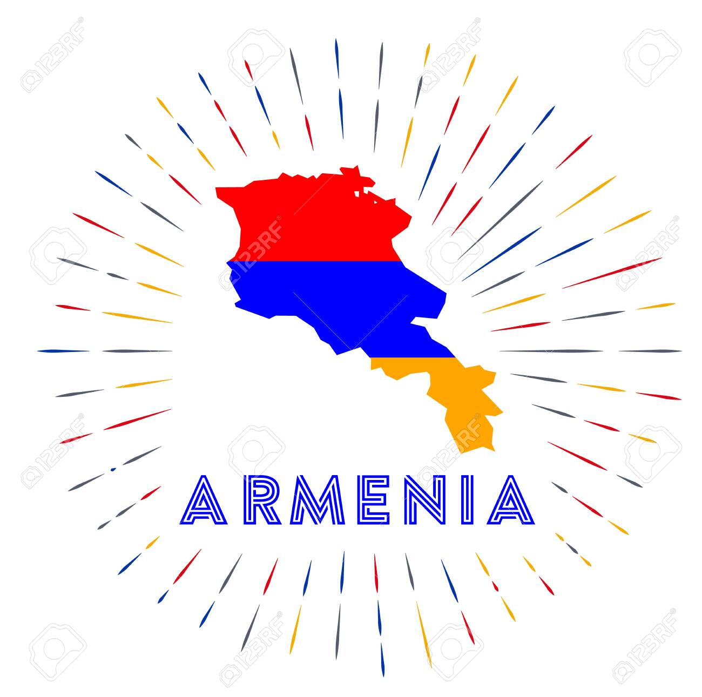
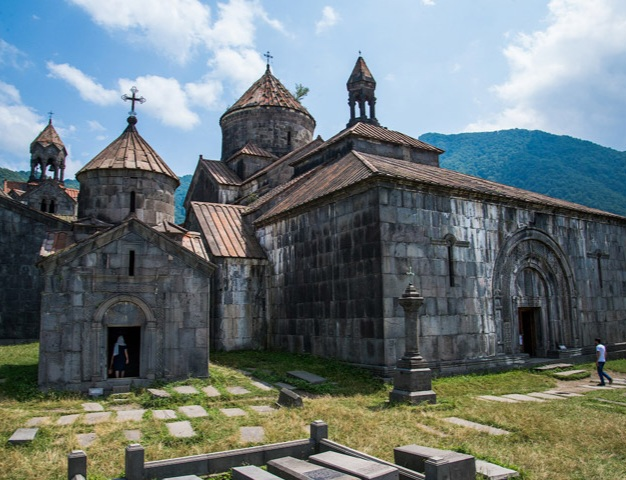
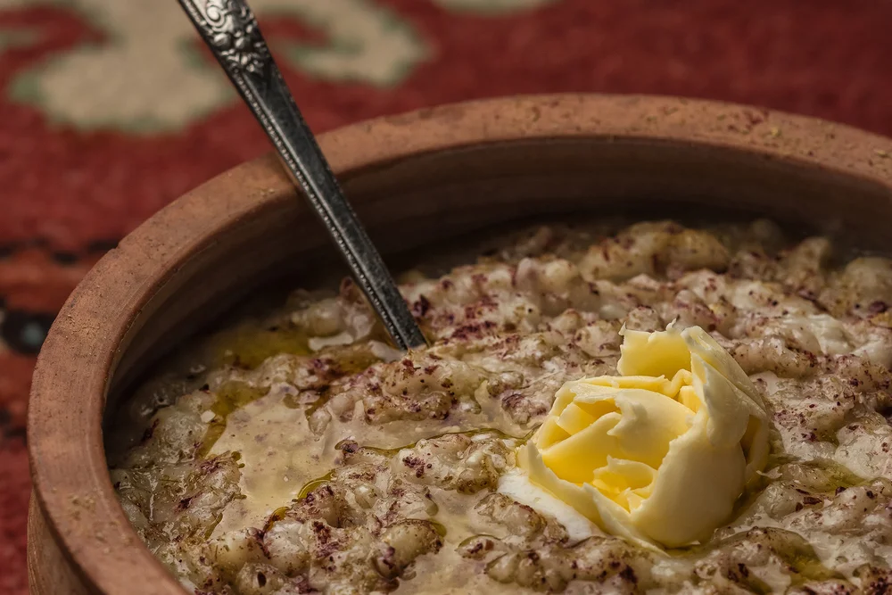
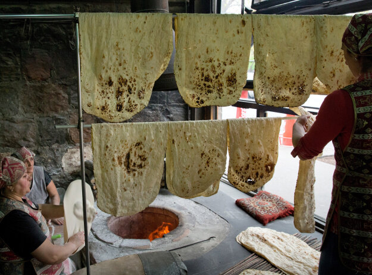

|  | Hay Culture .COM |
| home | Intruduction | About Us | Phone | Home |
Armenian culture

|
ՏԱՐԱԶՀայկական տարազ, հայկական ազգային հագուստ։ Հայկական տարազի մեջ գերակշռում են Երկրի չորս տարրերի` հողի, ջրի, օդի և կրակի գույները, որոնք 14-րդ դարի հայ փիլիսոփա Գրիգոր Տաթևացու վկայությամբ, արտահայտում են հողի սևությունը, ջրի սպիտակությունը, օդի կապույտը և հրո կարմիրը։ Ծիրանին խորհրդանշում է խոհեմություն և ողջախոհություն, կարմիրը՝ արիություն և մարտիրոսություն, կապույտը՝ երկնավոր արդարություն, սպիտակը՝ մաքրություն։ Տարազների կատարման եղանակների ինչ-որ մի մասը մինչև մեր օրն է պահպանվել և կիրառական արվեստում շատ ակտիվ օգտագործվում է, բայց կան տեխնիկաներ, որոնք մենք կորցրել ենք։ Հայաստանի յուրաքանչյուր գավառ առանձնանում է իր տարազով։ Հայկական ասեղնագործության հայտնի կենտրոնները՝ Վան-Վասպուրականը, Կարինը, Շիրակը, Սյունիք-Արցախը, Կիլիկիան, առանձնանում են զարդաձևերի, գունային համադրության և ամբողջ sexmir aystex avelin imanalu hamar |
 |
ՀաղպատՀաղպատ անվանման հետ կապված են բազմաթիվ լեգենդներ, նրանցից մեկի համաձայն Սանահինի իշխաններից մեկը հրավիրում է իր մոտ ճանաչված մի վարպետի՝ վանք կառուցելու համար։ Վարպետը ներկայանում է իշխանին որդու հետ։ Աշխատանքի ընթացքում վեճ է առաջանում հոր և որդու միջև։ Ենթավարպետներից մեկը բռնում է որդու կողմը։ Այսպես, կռվելով հոր հետ, որդին թողնում է աշխատանքը, վեր է կենում և հեռանում։ Ճանապարհին, մի ուրիշ իշխան վարձում է նրանց՝ իր վանքը կառուցելու պատվերով։ Երբ որդու բարձրացրած պատերը հասնում են այնքան, որ տեսանելի են դառնում Սանահինից, աշխատավորները հաղորդում են դրա մասին ծեր վարպետին։ Ոչ աշխատանքային օրը նա որոշում է այցելել որդու շինարարությունը, մոտենում է կիսասարք վանքի պատին և երկար զննում այն։ Բոլորը լուռ սպասում էին ծեր վարպետի գնահատականին։ Վերջապես, նա հրեց շարվածքի քարը և ասաց. «Հախ պատ»։ Այստեղ հայր և որդի գրկախառնվեցին և հաշտվեցին։ Իսկ վանքին մնաց «Հաղպատ» անվանումը։ sexmeq avelin imanalu hamar |

|
տոլմաՀայաստանում տոլման ամենատարածված և ամենահայտնի ուտեստներից մեկն է, ինչի պատվին կազմակերպվում է ամենամյա խոհարարական միջոցառում՝ «Տոլմայի փառատոն»։ Սովորաբար այն մատուցում են մածունով և ճզմած սխտորով։ Որպես համեմունք՝ տոլմայի մեջ հազվադեպ օգտագործում են նաև ընկույզով, սնկով և բալի սոուս։ Տոլմայի պատրաստման համար կիրառվում է մսի 3 տեսակ՝ խոզի միս, տավարի միս և ոչխարի միս։ Ինչպես նաև օգտագործվում են բարկահամ խոտաբույսեր՝ ռեհան, խնկածաղիկ, թարխուն։ Տոլմայի պատրաստման համար անհրաժեշտ տերևները (թփերը) պետք է լինեն ամենանուրբը և ամենամատղաշը։ Կիրառվում են թե՛ խաղողի, թե՛ կաղամբի թփեր։ Ինչպես նաև գոյություն ունի տոլմայի մի տեսակ, որը հայերն անվանում են «պասուց տոլմա» (ռուս.՝ пасуц толма), որն իրենից ներկայացնում է պահքի համար նախատեսված տոլմա, որի միջուկն են կազմում ոսպը, կարմիր լոբին, սիսեռը, ցորենի հատիկավորները, տապակած սոխը, տոմատի մածուկը sexmeq avelin imanalu hamar |
 |
ՀարիսաՑորենի ձավարը և հավի, ոչխարի կամ տավարի միսը ջրով եփում են՝ փայտե թիակով հարելով մինչև մածուցիկ զանգված դառնալը։ Ուտելիս վրան լցնում են հալած յուղ (երբեմն՝ նաև համեմունք)։ Հնում համարվել է ծիսական և տոնական կերակուր։ Պատրաստել են հանդիսավոր օրերին (հարսանիք, ժողովրդական տոներ և այլն)։ Կճուճի մեջ թոնրում ողջ գիշեր եփելուց հետո կերել են մեծ մասամբ կիրակի առավոտյան։ Համարվում է Հայաստանի ազգային ճաշատեսակը sexmir aystex avelin imanalu hamar |

|
ՍանահինՍանահին, առանձին թաղամաս Հայաստանի Հանրապետության Լոռու մարզի Ալավերդի քաղաքում։ Մինչև 1967 թվականը եղել է առանձին գյուղ։ Իր բնության և պատմամշակութային բազմաթիվ հուշարձանների առկայության շնորհիվ հանդիսանում է Հայաստանի զբոսաշրջային հայտնի վայրերից մեկը[1]։ Այնտեղ է գտնվում է հայկական առաքելական հռչակավոր վանական համալիրներից մեկը՝ Սանահինի վանքը, որը Հաղպատի վանքի հետ միասին ընդգրկված է ՅՈՒՆԵՍԿՕ-ի համաշխարհային ժառանգության ցանկում sexmeq avelin imanalu hamar |
 |
ԼավաշըԼավաշը հայտնի է Առաջավոր Ասիայի և Մերձավոր Արևելքի մի շարք երկրներում, բայց միայն Հայաստանում է, որ այն զբաղեցնում է, թերևս, գլխավոր տեղը՝ սնման ողջ համակարգում։ Հացի նկատմամբ հարգալից վերաբերմունքը հայկական մշակույթի տարրերից մեկն է, բայց լավաշի նկատմամբ այդ ավանդույթը առավել ընդգծված է՝ համեմատած զանգվածային արտադրության հացաբուլկեղենի մյուս տեսակների հետ[33]։ «Լավաշը» համարվում է հայկական ազգային խոհանոցի ալյուրե հիմնական ուտեստը։ Հայաստանում այն սննդի անբաժանելի մասնիկ է և, սովորաբար, մատուցվում է խաշի հետ միասին։ Բացի այդ, Հայաստանում կիրառվում է նաև լավաշի մեջ ձկան շոգեխաշման ավանդական տարբերակը[36]։ Զատկի ժամանակ հայկական եկեղեցիներում ռուսական կուլիչի փոխարեն մատուցում են լավաշ[37 sexmir aystex avelin imanalu hamar |
ogtveq im botic |
| Hay Culture .COM |